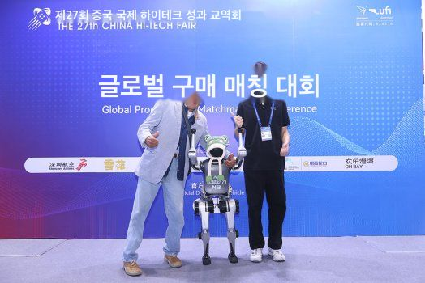
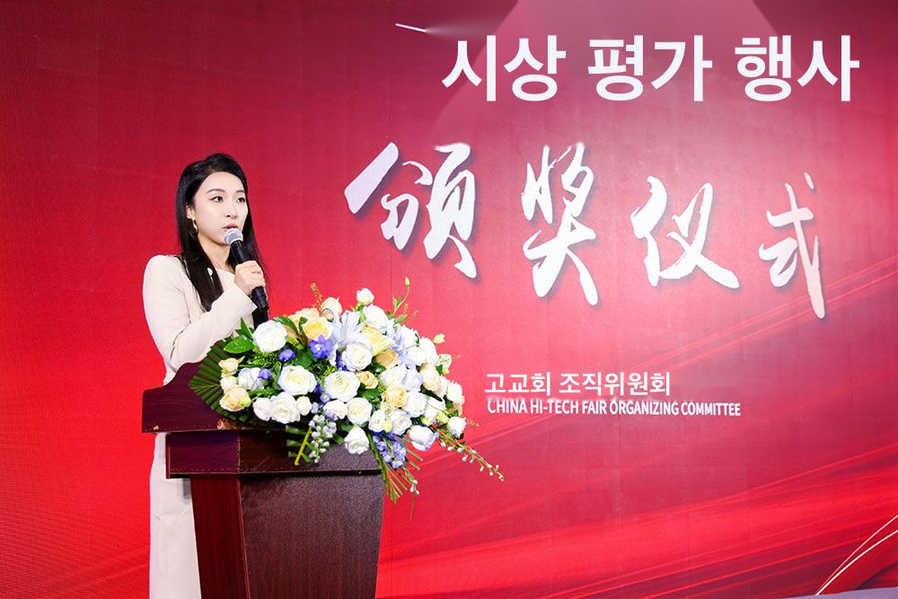
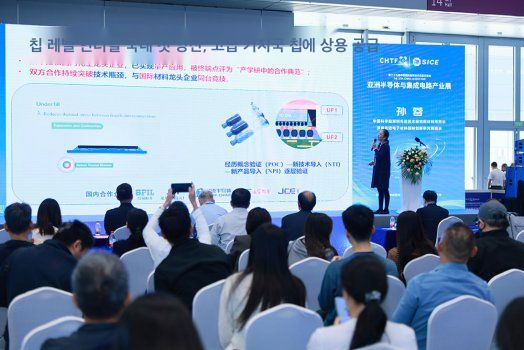
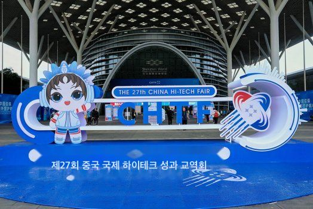
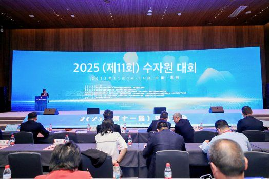
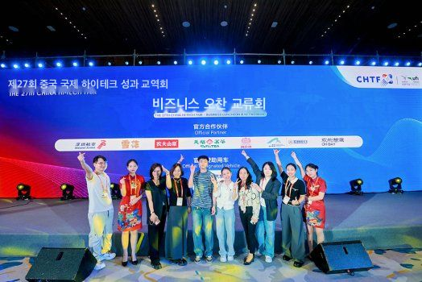
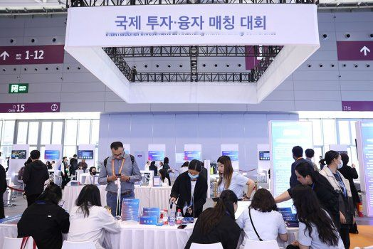

고교회 사진

글로벌 구매 매칭대회
시상식 BCE 아시아 바이오·화학공학전
BCE 아시아 바이오·화학공학전

반도체·집적회로 저고도 경제·통용항공전
저고도 경제·통용항공전
 항공우주
항공우주
 2025 현장 사진 모음 2
2025 현장 사진 모음 2

2025 현장 사진 모음 1
배수 대회
CHTF 2025 오찬 교류회 2025 현장 사진 모음 3
2025 현장 사진 모음 3

글로벌 투자·융자 매칭회
글로벌 구매 매칭대회
시상식BCE 아시아 바이오·화학공학전

반도체·집적회로저고도 경제·통용항공전
항공우주
2025 현장 사진 모음 2

2025 현장 사진 모음 1
배수 대회
CHTF 2025 오찬 교류회2025 현장 사진 모음 3

글로벌 투자·융자 매칭회